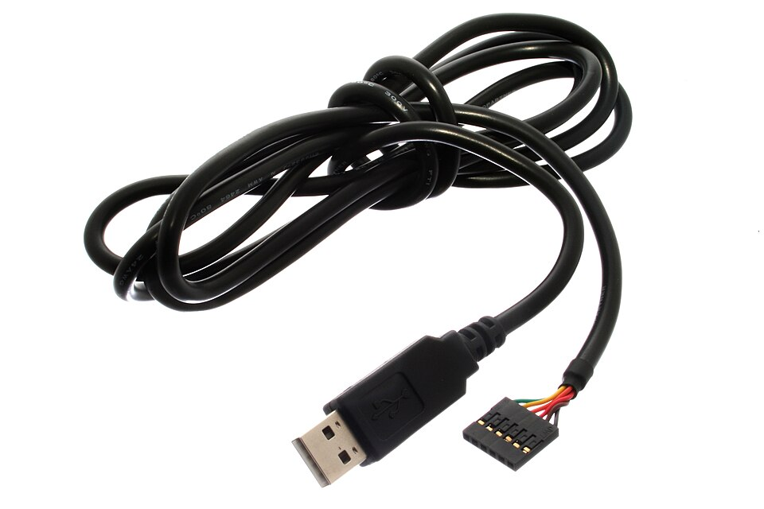

Log a CAN bus and verify the frame data
A CAN logger receives frames but the display shows the wrong temperature. Inspect the ID, bytes, sign, scale and timeout one at a time.
Linux with SocketCAN and can-utils for the virtual exercise, or the worked transcript. For physical observation use your own isolated extra-low-voltage training hardware. Match transceivers, documented bit rates and termination to that bus.
Know which layer you are checking
A CAN transceiver turns controller-side signals into a differential signal on CAN_H and CAN_L. A frame ID participates in arbitration and indicates how the application should interpret data. It need not identify a particular destination. A signal definition supplies byte order, signedness and scale.

Photo by ESO/H.H.Heyer, scaled for the course. Original · CC BY 4.0.
.jpg){kind=link}

Photo by oomlout, resized. Original photo · CC BY-SA 2.0.

Send a single frame on a virtual training interface
Use a disposable Linux VM or dedicated test computer you administer. Use vcan0 throughout. Installation of can-utils depends on your distribution. The following setup needs administrative permissions for a local virtual interface.
sudo modprobe vcan
sudo ip link add dev vcan0 type vcan
sudo ip link set vcan0 upRun the monitor in one terminal and your training frame in another.
candump -L vcan0cansend vcan0 321#F40123Expect the ID 321 in hex and payload F4 01 23. For the exercise, bytes 0–1 are a little-endian signed 16-bit temperature, scaled by 0.1 °C per count. Byte 2 is a counter. The temperature count 0x01F4 is 500, so report 50.0 °C and counter 35. For a cold training case try 321#CEFF24, which encodes −5.0 °C and counter 36.
Watch on YouTube · Follow the frame from a send command to a dump readout. Keep the exercise on the virtual interface named in this lesson. CAN-utils over VCAN | Virtual CAN Interface Tutorial | Linux SocketCAN · The EV Engineer.
Linux SocketCAN documentation · Official can-utils repository.
Ask what the virtual exercise leaves for a physical bench
The virtual interface doesn’t model wiring or hardware arbitration. On a disconnected, unpowered bench trainer known to have two 120 Ω end terminations, measure across CAN_H and CAN_L with the selected node supplies disconnected. Two 120 Ω resistors in parallel give about 60 Ω. About 120 Ω can indicate one missing termination. Verify the actual connection and compare with the design. For physical traffic use the specified bit rate and receive setup.
Use a timing requirement in the worksheet. If the sample is intended at 5 Hz, start by marking it stale after 1 second without a valid frame. Show the last source and receive times, and restart the age timer only when the expected ID and size arrive. A virtual receive path with no frames is a useful fault case.
Save a decoder check
Save the raw capture with times, both worked frames and their decoded values. State which observations would be different on the physical wire. Stop the monitor and remove the virtual interface only if you created it. sudo ip link del dev vcan0.
T17 · How networks really work: Ethernet, IP, TCP/UDP
T34 · Control signals, PLC scans and independent proof
T38 · Time series, bus layers and evidence quality